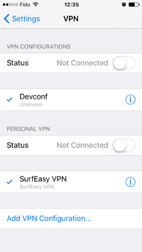
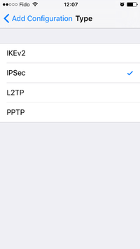
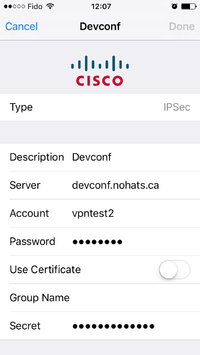
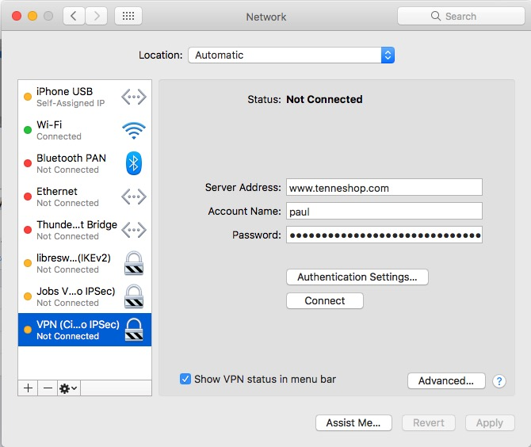
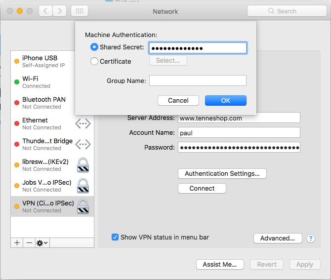

How to Setup a L2TP/IPsec VPN on Debian 8
一直以来都想搭个 L2TP/IPSec VPN， 这样我的设备(主要是 iPhone 和 Mac)就可以不用安装第三方应用就能科学上网了。某天在 Github 上看到一个库汇总了大多数 VPN 方案，于是就从中选择了 Libreswan。
现在回想起来过程还挺曲折，花费了不少时间，所以这里记下来，一来可以供自己日后查看；二来可以给有需要的网友提供参考。Libreswan 的文档不多，也没有很好的入门示例，对像我这样的新手来说确实不能说很友好。
我用的是 digitalocean 家的 vps,总体感觉不错，是个人开发者不错的选择，可以使用优惠码购买，这样你可以获赠 10 美元。
首先是安装 Libreswan，我们可以使用 Debian 提供的预编译好的二进制包安装；也可以从源码安装。我当时搜索安装包没搜到，就使用了编译源码安装，今天又尝试搜索了下却搜到了，不清楚当日是什么原因，推荐使用预编译好的二进制包安装，简单省事。
然后是配置 Libreswan，这是过程中最复杂的部分，Libreswan 支持多种认证方式：PreShared Key with IDs (or IPs as ID)；Raw RSA public keys；X.509 Certificates。它也提供了好几个配置示例，可以在它 Main Wiki Page 页面的 User Documentation 部分的 Configuration examples 里面找到，我一开始使用的是 VPN server for remote clients using IKEv2，经过一翻折腾，服务器反馈隧道建立成功，但终端死活显示连接失败，之后又尝试通过创建 .mobileconfig 文件来配置 VPN 也失败了。后面我又看到了 VPN server for remote clients using IKEv1 XAUTH with PSK，它提到支持 All Apple iphones, ipads 和 macOS，所以我又参照这种方法来尝试，事实证明这种方法是可行的，但是官方文档里面的配置有点点小问题。
幸好 Libreswan 提供了很多命令，可以使用 ipsec --help 查看完整的命令列表，我们可以用这些命令来帮助我们配置。
详细的配置过程如下：
首先我们要确认 Libreswan 的运行状态，这可以通过 ipsec status 命令得到，如果服务没启动，我们可以使用 ipsec start 启动，之后可以使用 ipsec verify 确认系统和配置文件有没有问题，有问题可以根据提示依次解决。没有问题之后我们添加连接配置。
我的主配置文件如下：
1 2 3 4 5 6 7 8 9 10 11 12 13 14 15 16 17 18 19 20 21 22 23 24 25 26 27 28 29 30 31 32 33 34 35 36 37 38 39 40 41 | |
新建 IKEv1 XAUTH with PSK 连接配置文件 /etc/ipsec.d/xauth-psk.conf 内容如下：
conn xauth-psk
authby=secret
pfs=no
auto=add
rekey=no
left=%defaultroute
leftsubnet=0.0.0.0/0
rightaddresspool=10.231.247.10-10.231.247.254
right=%any
# make cisco clients happy
cisco-unity=yes
# address of your internal DNS server
#modecfgdns1=10.231.247.1
modecfgdns1=8.8.8.8
modecfgdns2=193.110.157.123
leftxauthserver=yes
rightxauthclient=yes
leftmodecfgserver=yes
rightmodecfgclient=yes
modecfgpull=yes
#configure pam via /etc/pam.d/pluto
#xauthby=pam
xauthby=file
# xauthby=alwaysok MUST NOT be used with PSK
# Can be played with below
#dpddelay=30
#dpdtimeout=120
#dpdaction=clear
xauthfail=soft
ike-frag=yes
ikev2=never
新建 /etc/ipsec.d/xauth-psk.secrets 存储 PSK 内容如下：
# If this is the only IP and only PSK based configuration, you can configure without hardcoding the IP:
: PSK "ExampleSecret"
新建 /etc/ipsec.d/passwd 存储用于认证的用户名密码，示例如下：
john:$1$5h/bAg4p$Q5/c2XjwSzYy3sh/1j8Bp/:xauth-psk
paul:$1$YiVSo114$um2oIM6AqucFuMeXl/1ab0:xauth-psk
为了能通过 VPN 访问整个互联网，还需要提供一些 NAT 规则:
1 2 3 4 | |
我的外网网卡是 eth0，所以我执行命令：
1 2 3 4 5 6 7 | |
有时我们可能会遇到连接问题，这时可以在主配置文件 /etc/ipsec.conf 中开启 plutodebug=all，然后就可以使用 ipsec barf | tac | head -n 100 查看服务日志，帮助定位连接问题。解决问题之后再使用 plutodebug=none 关闭调试模式，之后 ipsec restart 重启生效。
iPhone 客户端配置
Settings > General > VPN > add VPN Configuration > IPSec.
Fill in the description, server (name or IP), Account (aka username), Password and Secret (aka PSK). For PSK connection you MUST NOT enter a Group Name.



macOS 客户端配置
System Preferences > Network > + > Interface: VPN > VPN Type: Cisco IPSec


Reference:
VPN server for remote clients using IKEv1 XAUTH with PSK
VPN server for remote clients using IKEv2
ipsec.conf.5
Mac OS IKEv2 missing payload(s) (ISAKMP_NEXT_v2AUTH)
IKEv2 Configuration Profile for Apple iOS 8 and newer